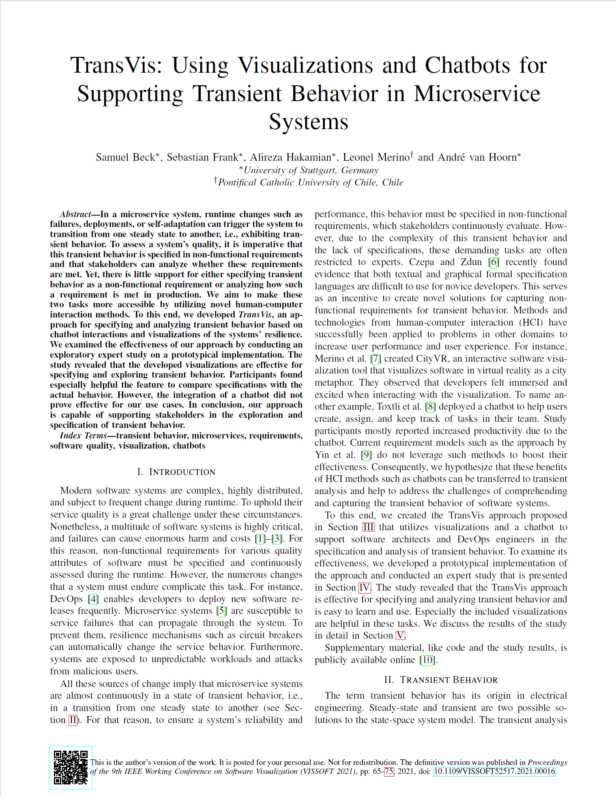

TransVis: Using Visualizations and Chatbots for Supporting Transient Behavior in Microservice Systems
(opens in new tab)

Venue. VISSOFT (2021)
Materials.
DOI(opens in new tab)
PDF(opens in new tab)
Abstract. In a microservice system, runtime changes such as failures, deployments, or self-adaptation can trigger the system to transition from one steady state to another, i.e., exhibiting transient behavior. To assess a system's quality, it is imperative that this transient behavior is specified in non-functional requirements and that stakeholders can analyze whether these requirements are met. Yet, there is little support for either specifying transient behavior as a non-functional requirement or analyzing how such a requirement is met in production. We aim to make these two tasks more accessible by utilizing novel human-computer interaction methods. To this end, we developed TransVis, an approach for specifying and analyzing transient behavior based on chatbot interactions and visualizations of the systems' resilience. We examined the effectiveness of our approach by conducting an exploratory expert study on a prototypical implementation. The study revealed that the developed visualizations are effective for specifying and exploring transient behavior. Participants found especially helpful the feature to compare specifications with the actual behavior. However, the integration of a chatbot did not prove effective for our use cases. In conclusion, our approach is capable of supporting stakeholders in the exploration and specification of transient behavior.
Link to this page: